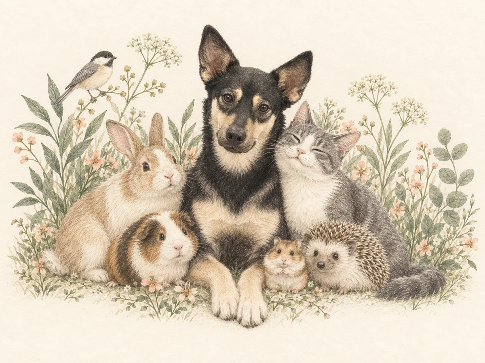
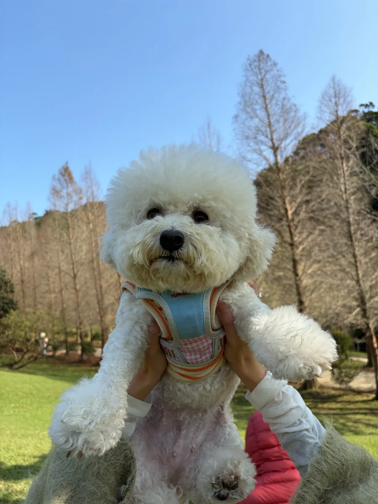
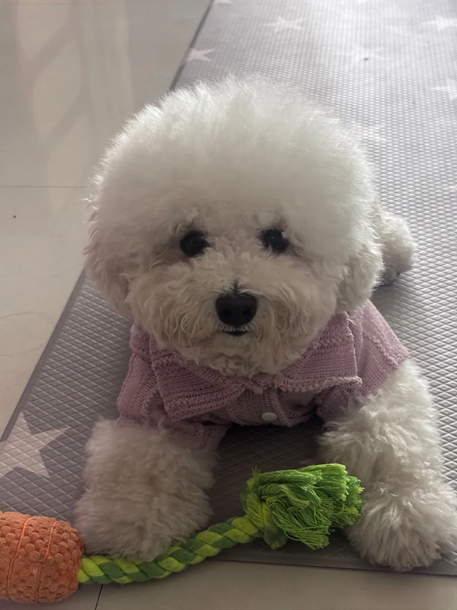
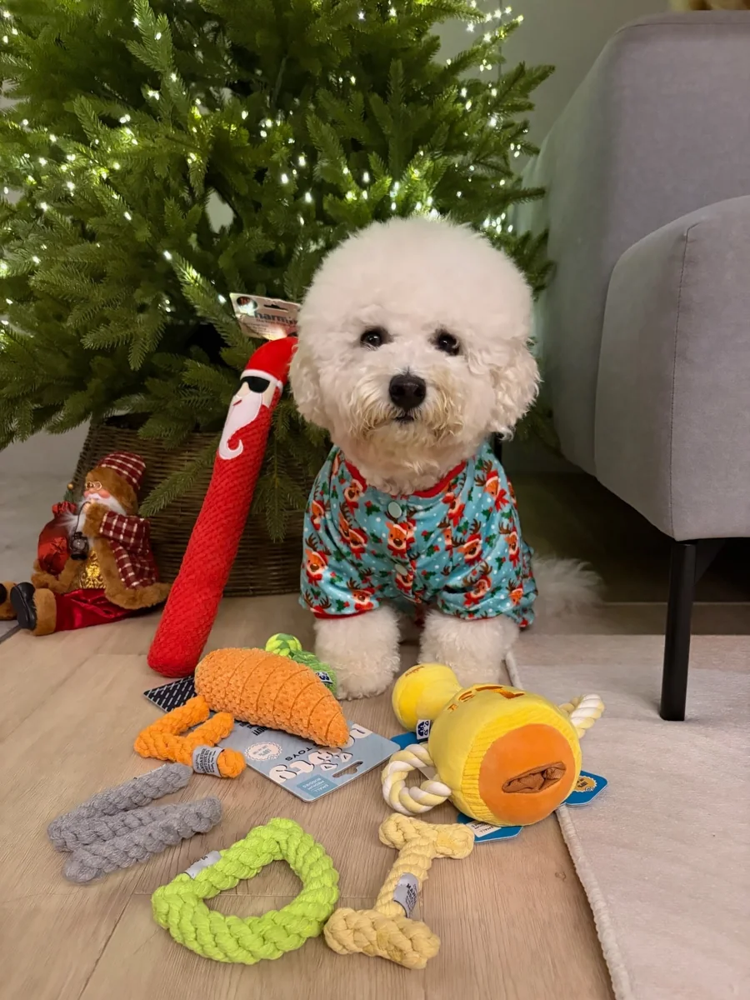
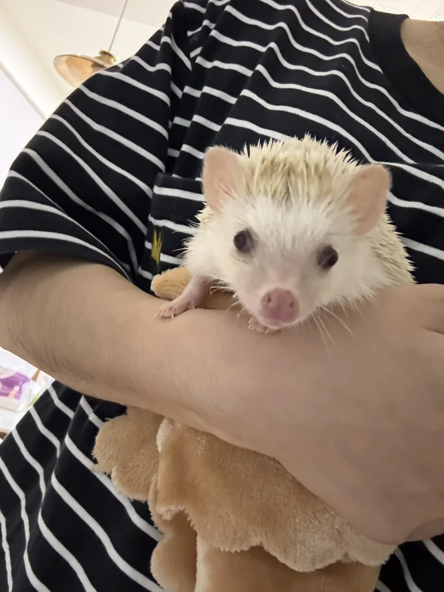
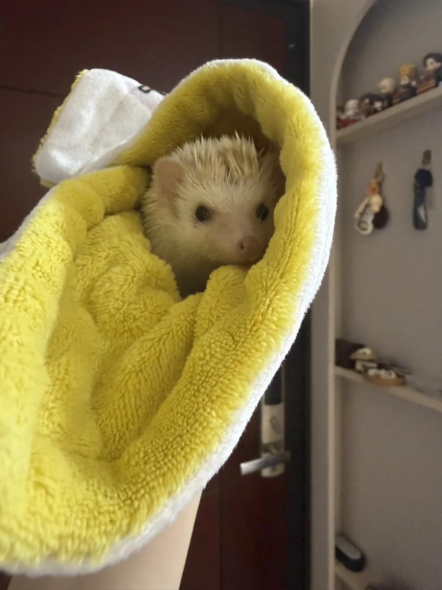
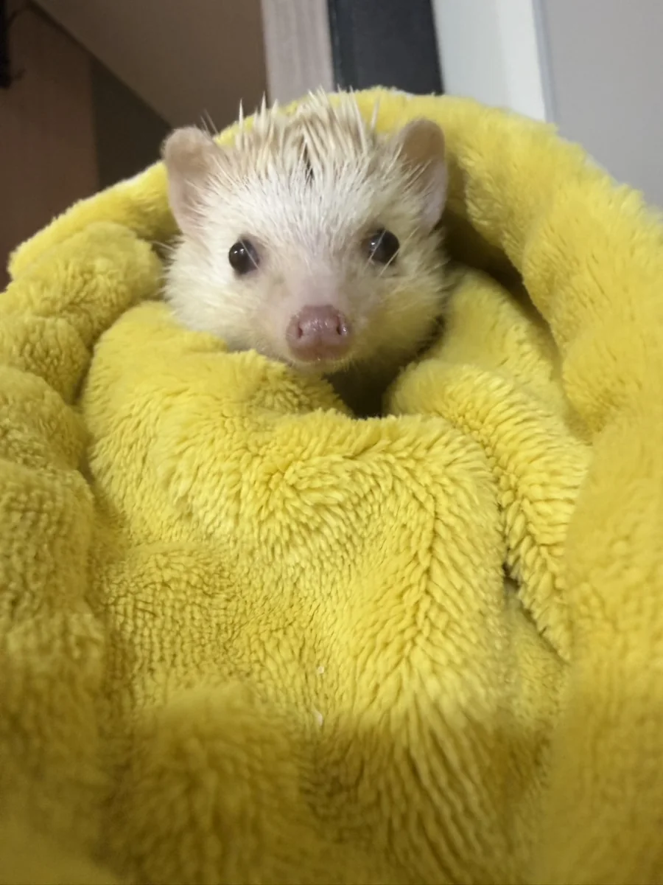
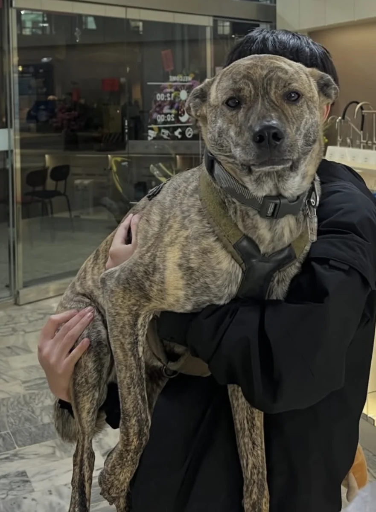
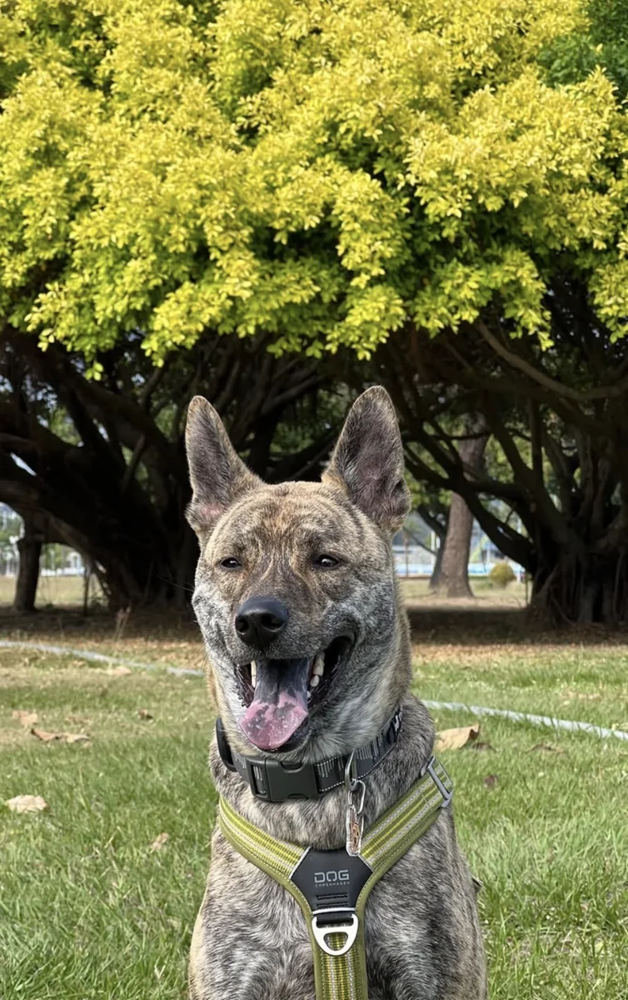
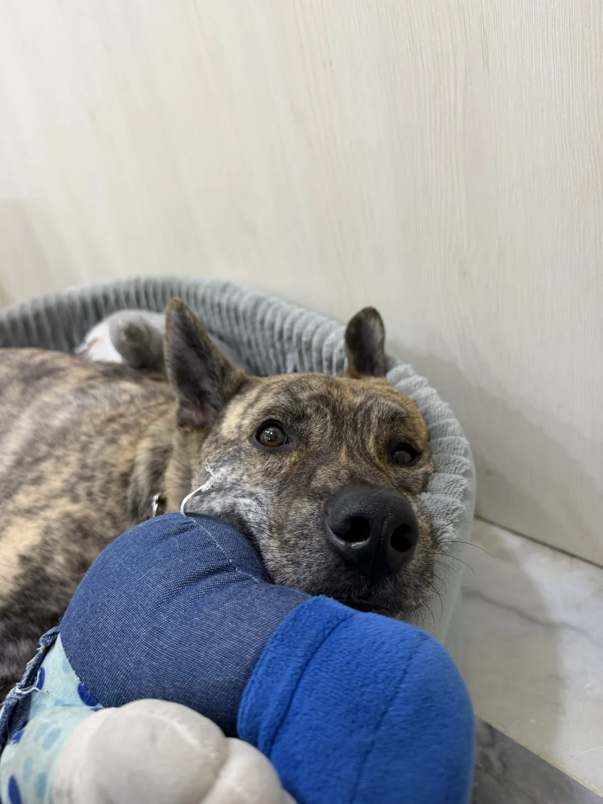

日常溝通
好好認識，相伴的每一天。
從生活習慣、相處感受，到想對彼此說的話，為你與毛孩留下一段專心傾聽的時光。
詢問日常溝通
關於我
很高興，在這裡遇見你
我是阿玲 Ling，
「來KU通RO」的寵物溝通師，
累積 100+ 次溝通經驗。
我透過直覺感應探索與毛孩的連結，
也陪你慢慢理解彼此的感受。
我的風格是療癒，也帶一點幽默和直接。
讓我們帶著耐心和一點笑容，
聊聊毛孩的日常小心事。
想了解預約方式，歡迎到 IG @kuro_listen 查看精選動態。
以你的故事為起點
無論是日常的陪伴，還是心裡的思念，
都值得被溫柔對待。
好好認識，相伴的每一天。
從生活習慣、相處感受，到想對彼此說的話，為你與毛孩留下一段專心傾聽的時光。
詢問日常溝通讓思念，有一個溫柔的位置。
帶著對離世毛孩的愛與回憶，分享那些還想說的話，在自己的步調裡整理思念與感受。
在我們聊天之前
從預約方式到溝通前的準備，
請先讀完這些小提醒，再預約我們的聊天時光。
阿玲會在 Instagram @kuro_listen，於每月 20 號晚上 20:00公布下個月全部可預約時段。
開放後一律透過官方 LINE預約，請提供可配合的時段，並將多個選項依優先順序排列。
送出後、收到預約成功通知前，請先不要再傳訊息，避免訊息排序被打亂，影響排隊順序與預約權益。
預約成功者會收到「成交通知」，內容會註明預約日期與時段；收到這份通知才代表預約成功。
還沒收到也不要氣餒，若有剩餘可約時段，會再公布於 Instagram。
必須是毛孩的主要照護者；前男友、前女友或以前照顧過的人，都不接受預約。
家長也需願意在溝通後 7 日內，以下列其中一種方式分享回饋：
三方的主觀認知可能不同，請帶著開放、願意討論的心，一起探索小動物的內心。
溝通時間為60 分鐘，採三方即時文字溝通，家長能與阿玲順暢地以文字交流即可。
毛孩在睡覺或不在你身邊都可以，當下沒有身體不舒服即可。
請在溝通前 2 天提供問題、照片，以及你對毛孩的自稱。
準備4–5 張高清照片，都需是3 個月內拍攝，且明亮、清楚。其中至少一張需拍到毛孩正臉、直視鏡頭，以及半身或全身。
話題中會提到的人、物品或地點，也可先提供照片，提升聊天效率。
可以聊喜歡的食物、玩具、地點、朋友，以及小動物的各種想法與感受。
不聊醫療行為相關話題，也不接受強硬要求改變動物行為。請勿「情勒」小動物，這類提問阿玲會直接略過。
在溝通前 3 天，請每天至少提醒毛孩一次：
「過幾天，會有個姐姐找你聊天喔～」
這一步很重要，讓小動物先有心理準備，聊天過程可以更順暢，阿玲也不會成為突然打擾牠的陌生人。
若需取消，請在預約時間至少 60 分鐘前主動通知阿玲，之後仍可預約下次。
預約成功後，請於約定時段上線。阿玲會多等候 10 分鐘；若家長仍未出現，之後將不再接受預約。
遲到造成的溝通時間縮短，請自行承擔。
過程中只要阿玲或小動物感到不舒服，阿玲有權立即終止溝通，一切以小動物的身心靈舒適為主。
預約即視同同意以上所有規定及要求。
每一次相遇，都值得珍藏
這裡將收藏毛孩家長的真實回饋，經同意後分享。
饅饅的故事 · 日常溝通

聊天一開始，饅饅有自己的稱呼：家長是小姊姊，而生過寶寶的她，才是媽媽。

不是要和大隻弟弟一樣多，只想再多一點點。這場聊天，也有可愛的肉肉協商。

最珍惜的，是被抱著、一起窩著的日常。家長也回應：「我們有她，也很幸福」。
索妮亞 Sonia · 刺蝟的日常溝通

我轉述索妮亞想保持一點距離聊天。當然可以，就照她舒服的步調，慢慢認識彼此。

聊到滾輪，話題轉成和媽咪一起休息。家長也分享，平常會坐著看劇、抱著索妮亞。

對話裡出現一位深色、圓潤的哥哥。家長確認是已離世的布布，也認出那份熟悉的叮嚀。
水哥的故事 · 日常溝通

從顧店聊到家裡賣水，我追問是不是淨水器，得到家長確認。水哥還特別強調，自己是乾淨的水。

談到身材，水哥立刻替自己辯護，還把順順拉進同一陣營。這位大哥，對自己很有信心。

準備結束聊天時，水哥還要討一句姊姊的愛。再怎麼嘴硬，最後還是要把喜歡說清楚。
讓我們從一句你好開始
請詳閱預約須知及Instagram @kuro_listen 的精選動態。
有想詢問的事情，也歡迎私訊官方LINE : )
預約請一律使用官方LINE